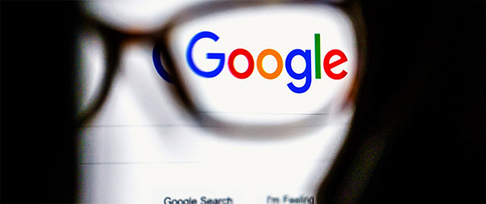
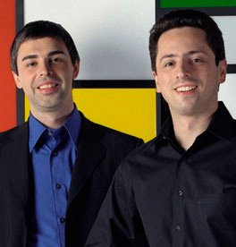

De onde vem o Google?
Google LLC é uma empresa multinacional de serviços online e software dos Estados Unidos. O Google hospeda e desenvolve uma série de serviços e produtos baseados na internet e gera lucro principalmente através da publicidade pelo AdWords. A Google é a principal subsidiária da Alphabet Inc.

A empresa foi fundada por Larry Page e Sergey Brin, muitas vezes apelidados de "Google Guys". Foi fundada como uma empresa privada em 4 de setembro de 1998 e sua oferta pública inicial foi realizada em 19 de agosto de 2004. A missão declarada da empresa desde o início foi "organizar a informação mundial e torná-la universalmente acessível e útil" e seu slogan oficial era "Não seja mal". Em outubro de 2015, o lema foi substituído no código de conduta corporativo da Alphabet pela frase "Faça a coisa certa". Em 2006, a empresa mudou-se para sua atual sede, em Mountain View, Condado de Santa Clara no estado da Califórnia. O Google é executado através de mais de um milhão de servidores em data centers ao redor do mundo e processa mais de cinco bilhões de solicitações de pesquisa e vinte petabytes de dados gerados por usuários todos os dias.
Um pouco de História

O Google começou em janeiro de 1996 como um projeto de pesquisa de Larry Page e Sergey Brin, quando ambos eram estudantes de doutorado na Universidade Stanford, na Califórnia, Estados Unidos.
Enquanto os motores de busca convencionais exibiam resultados classificados pela contagem de quantas vezes os termos de busca apareciam na primeira página, os dois teorizaram sobre um sistema melhor que analisava as relações entre os sites. Eles chamaram esta nova tecnologia PageRank, onde a relevância de um site era determinada pelo número de páginas, bem como pela importância dessas páginas, que ligavam de volta para o site original.
Page e Brin originalmente apelidaram de sua nova ferramenta de busca de "BackRub", porque o sistema de checava backlinks para estimar a importância de um site.

Eventualmente, eles mudaram o nome para o Google, proveniente de um erro ortográfico da palavra "googol", o número um seguido por cem zeros, que foi criado para indicar a quantidade de informação que o motor de busca podia processar, o nome também reflete a missão de organizar uma quantidade aparentemente infinita de informações na web. Originalmente, o Google funcionou sob o site da Universidade Stanford, com o domínio google.stanford.edu, com os direitos de autor mencionados à universidade no final de sua página à época.
O nome de domínio "Google" foi registrado em 15 de setembro de 1997 e a empresa foi constituída em 4 de setembro de 1998. No início, sua sede ficava na garagem de uma amiga (Susan Wojcicki) em Menlo Park, Califórnia. Craig Silverstein, um colega de doutorado estudante em Stanford, foi contratado como o primeiro funcionário.